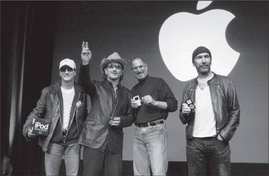

MUSIC MAN
The Sound Track of His Life

Jimmy Iovine, Bono, Jobs, and The Edge, 2004
As the iPod phenomenon grew, it spawned a question that was asked of presidential candidates, B-list celebrities, first dates, the queen of England, and just about anyone else with white earbuds: "What's on your iPod?" The parlor game took off when Elisabeth Bumiller wrote a piece in the New York Times in early 2005 dissecting the answer that President George W. Bush gave when she asked him that question. "Bush's iPod is heavy on traditional country singers," she reported. "He has selections by Van Morrison, whose ‘Brown Eyed Girl' is a Bush favorite, and by John Fogerty, most predictably ‘Centerfield.'" She got a Rolling Stone editor, Joe Levy, to analyze the selection, and he commented, "One thing that's interesting is that the president likes artists who don't like him."
"Simply handing over your iPod to a friend, your blind date, or the total stranger sitting next to you on the plane opens you up like a book," Steven Levy wrote in The Perfect Thing. "All somebody needs to do is scroll through your library on that click wheel, and, musically speaking, you're naked. It's not just what you like—it's who you are." So one day, when we were sitting in his living room listening to music, I asked Jobs to let me see his. As we sat there, he flicked through his favorite songs.
Not surprisingly, there were all six volumes of Dylan's bootleg series, including the tracks Jobs had first started worshipping when he and Wozniak were able to score them on reel-to-reel tapes years before the series was officially released. In addition, there were fifteen other Dylan albums, starting with his first, Bob Dylan (1962), but going only up to Oh Mercy (1989). Jobs had spent a lot of time arguing with Andy Hertzfeld and others that Dylan's subsequent albums, indeed any of his albums after Blood on the Tracks (1975), were not as powerful as his early performances. The one exception he made was Dylan's track "Things Have Changed" from the 2000 movie Wonder Boys. Notably his iPod did not include Empire Burlesque (1985), the album that Hertzfeld had brought him the weekend he was ousted from Apple.
The other great trove on his iPod was the Beatles. He included songs from seven of their albums: A Hard Day's Night, Abbey Road, Help!, Let It Be, Magical Mystery Tour, Meet the Beatles! and Sgt. Pepper's Lonely Hearts Club Band. The solo albums missed the cut. The Rolling Stones clocked in next, with six albums: Emotional Rescue, Flashpoint, Jump Back, Some Girls, Sticky Fingers, and Tattoo You. In the case of the Dylan and the Beatles albums, most were included in their entirety. But true to his belief that albums can and should be disaggregated, those of the Stones and most other artists on his iPod included only three or four cuts. His onetime girlfriend Joan Baez was amply represented by selections from four albums, including two different versions of "Love Is Just a Four-Letter Word."
His iPod selections were those of a kid from the seventies with his heart in the sixties. There were Aretha, B. B. King, Buddy Holly, Buffalo Springfield, Don McLean, Donovan, the Doors, Janis Joplin, Jefferson Airplane, Jimi Hendrix, Johnny Cash, John Mellencamp, Simon and Garfunkel, and even The Monkees ("I'm a Believer") and Sam the Sham ("Wooly Bully"). Only about a quarter of the songs were from more contemporary artists, such as 10,000 Maniacs, Alicia Keys, Black Eyed Peas, Coldplay, Dido, Green Day, John Mayer (a friend of both his and Apple), Moby (likewise), U2, Seal, and Talking Heads. As for classical music, there were a few recordings of Bach, including the Brandenburg Concertos, and three albums by Yo-Yo Ma.
Jobs told Sheryl Crow in May 2003 that he was downloading some Eminem tracks, admitting, "He's starting to grow on me." James Vincent subsequently took him to an Eminem concert. Even so, the rapper missed making it onto Jobs's iPod. As Jobs said to Vincent after the concert, "I don't know ..." He later told me, "I respect Eminem as an artist, but I just don't want to listen to his music, and I can't relate to his values the way I can to Dylan's."
His favorites did not change over the years. When the iPad 2 came out in March 2011, he transferred his favorite music to it. One afternoon we sat in his living room as he scrolled through the songs on his new iPad and, with a mellow nostalgia, tapped on ones he wanted to hear.
We went through the usual Dylan and Beatles favorites, then he became more reflective and tapped on a Gregorian chant, "Spiritus Domini," performed by Benedictine monks. For a minute or so he zoned out, almost in a trance. "That's really beautiful," he murmured. He followed with Bach's Second Brandenburg Concerto and a fugue from The Well-Tempered Clavier. Bach, he declared, was his favorite classical composer. He was particularly fond of listening to the contrasts between the two versions of the "Goldberg Variations" that Glenn Gould recorded, the first in 1955 as a twenty-two-year-old little-known pianist and the second in 1981, a year before he died. "They're like night and day," Jobs said after playing them sequentially one afternoon. "The first is an exuberant, young, brilliant piece, played so fast it's a revelation. The later one is so much more spare and stark. You sense a very deep soul who's been through a lot in life. It's deeper and wiser." Jobs was on his third medical leave that afternoon when he played both versions, and I asked which he liked better. "Gould liked the later version much better," he said. "I used to like the earlier, exuberant one. But now I can see where he was coming from."
He then jumped from the sublime to the sixties: Donovan's "Catch the Wind." When he noticed me look askance, he protested, "Donovan did some really good stuff, really." He punched up "Mellow Yellow," and then admitted that perhaps it was not the best example. "It sounded better when we were young."
I asked what music from our childhood actually held up well these days. He scrolled down the list on his iPad and called up the Grateful Dead's 1969 song "Uncle John's Band." He nodded along with the lyrics: "When life looks like Easy Street, there is danger at your door." For a moment we were back at that tumultuous time when the mellowness of the sixties was ending in discord. "Whoa, oh, what I want to know is, are you kind?"
Then he turned to Joni Mitchell. "She had a kid she put up for adoption," he said. "This song is about her little girl." He tapped on "Little Green," and we listened to the mournful melody and lyrics that describe the feelings of a mother who gives up a child. "So you sign all the papers in the family name / You're sad and you're sorry, but you're not ashamed." I asked whether he still often thought about being put up for adoption. "No, not much," he said. "Not too often."
These days, he said, he thought more about getting older than about his birth. That led him to play Joni Mitchell's greatest song, "Both Sides Now," with its lyrics about being older and wiser: "I've looked at life from both sides now, / From win and lose, and still somehow, / It's life's illusions I recall, / I really don't know life at all." As Glenn Gould had done with Bach's "Goldberg Variations," Mitchell had recorded "Both Sides Now" many years apart, first in 1969 and then in an excruciatingly haunting slow version in 2000. He played the latter. "It's interesting how people age," he noted.
Some people, he added, don't age well even when they are young. I asked who he had in mind. "John Mayer is one of the best guitar players who's ever lived, and I'm just afraid he's blowing it big time," Jobs replied. Jobs liked Mayer and occasionally had him over for dinner in Palo Alto. When he was twenty-seven, Mayer appeared at the January 2004 Macworld, where Jobs introduced GarageBand, and he became a fixture at the event most years. Jobs punched up Mayer's hit "Gravity." The lyrics are about a guy filled with love who inexplicably dreams of ways to throw it away: "Gravity is working against me, / And gravity wants to bring me down." Jobs shook his head and commented, "I think he's a really good kid underneath, but he's just been out of control."
At the end of the listening session, I asked him a well-worn question: the Beatles or the Stones? "If the vault was on fire and I could grab only one set of master tapes, I would grab the Beatles," he answered. "The hard one would be between the Beatles and Dylan. Somebody else could have replicated the Stones. No one could have been Dylan or the Beatles." As he was ruminating about how fortunate we were to have all of them when we were growing up, his son, then eighteen, came in the room. "Reed doesn't understand," Jobs lamented. Or perhaps he did. He was wearing a Joan Baez T-shirt, with the words "Forever Young" on it.
Bob Dylan
The only time Jobs can ever recall being tongue-tied was in the presence of Bob Dylan. He was playing near Palo Alto in October 2004, and Jobs was recovering from his first cancer surgery. Dylan was not a gregarious man, not a Bono or a Bowie. He was never Jobs's friend, nor did he care to be. He did, however, invite Jobs to visit him at his hotel before the concert. Jobs recalled:
We sat on the patio outside his room and talked for two hours. I was really nervous, because he was one of my heroes. And I was also afraid that he wouldn't be really smart anymore, that he'd be a caricature of himself, like happens to a lot of people. But I was delighted. He was as sharp as a tack. He was everything I'd hoped. He was really open and honest. He was just telling me about his life and about writing his songs. He said, "They just came through me, it wasn't like I was having to compose them. That doesn't happen anymore, I just can't write them that way anymore." Then he paused and said to me with his raspy voice and little smile, "But I still can sing them."
The next time Dylan played nearby, he invited Jobs to drop by his tricked-up tour bus just before the concert. When Dylan asked what his favorite song was, Jobs said "One Too Many Mornings." So Dylan sang it that night. After the concert, as Jobs was walking out the back, the tour bus came by and screeched to a stop. The door flipped open. "So, did you hear my song I sang for you?" Dylan rasped. Then he drove off. When Jobs tells the tale, he does a pretty good impression of Dylan's voice. "He's one of my all-time heroes," Jobs recalled. "My love for him has grown over the years, it's ripened. I can't figure out how he did it when he was so young."
A few months after seeing him in concert, Jobs came up with a grandiose plan. The iTunes Store should offer a digital "boxed set" of every Dylan song every recorded, more than seven hundred in all, for $199. Jobs would be the curator of Dylan for the digital age. But Andy Lack of Sony, which was Dylan's label, was in no mood to make a deal without some serious concessions regarding iTunes. In addition, Lack felt the price was too low and would cheapen Dylan. "Bob is a national treasure," said Lack, "and Steve wanted him on iTunes at a price that commoditized him." It got to the heart of the problems that Lack and other record executives were having with Jobs: He was getting to set the price points, not them. So Lack said no.
"Okay, then I will call Dylan directly," Jobs said. But it was not the type of thing that Dylan ever dealt with, so it fell to his agent, Jeff Rosen, to sort things out.
"It's a really bad idea," Lack told Rosen, showing him the numbers. "Bob is Steve's hero. He'll sweeten the deal." Lack had both a professional and a personal desire to fend Jobs off, even to yank his chain a bit. So he made an offer to Rosen. "I will write you a check for a million dollars tomorrow if you hold off for the time being." As Lack later explained, it was an advance against future royalties, "one of those accounting things record companies do." Rosen called back forty-five minutes later and accepted. "Andy worked things out with us and asked us not to do it, which we didn't," he recalled. "I think Andy gave us some sort of an advance to hold off doing it."
By 2006, however, Lack had stepped aside as the CEO of what was by then Sony BMG, and Jobs reopened negotiations. He sent Dylan an iPod with all of his songs on it, and he showed Rosen the type of marketing campaign that Apple could mount. In August he announced a grand deal. It allowed Apple to sell the $199 digital boxed set of all the songs Dylan ever recorded, plus the exclusive right to offer Dylan's new album, Modern Times, for pre-release orders. "Bob Dylan is one of the most respected poets and musicians of our time, and he is a personal hero of mine," Jobs said at the announcement. The 773-track set included forty-two rarities, such as a 1961 tape of "Wade in the Water" made in a Minnesota hotel, a 1962 version of "Handsome Molly" from a live concert at the Gaslight Café in Greenwich Village, the truly awesome rendition of "Mr. Tambourine Man" from the 1964 Newport Folk Festival (Jobs's favorite), and an acoustic version of "Outlaw Blues" from 1965.
As part of the deal, Dylan appeared in a television ad for the iPod, featuring his new album, Modern Times. This was one of the most astonishing cases of flipping the script since Tom Sawyer persuaded his friends to whitewash the fence. In the past, getting celebrities to do an ad required paying them a lot of money. But by 2006 the tables were turned. Major artists wanted to appear in iPod ads; the exposure would guarantee success. James Vincent had predicted this a few years earlier, when Jobs said he had contacts with many musicians and could pay them to appear in ads. "No, things are going to soon change," Vincent replied. "Apple is a different kind of brand, and it's cooler than the brand of most artists. We should talk about the opportunity we offer the bands, not pay them."
Lee Clow recalled that there was actually some resistance among the younger staffers at Apple and the ad agency to using Dylan. "They wondered whether he was still cool enough," Clow said. Jobs would hear none of that. He was thrilled to have Dylan.
Jobs became obsessed by every detail of the Dylan commercial. Rosen flew to Cupertino so that they could go through the album and pick the song they wanted to use, which ended up being "Someday Baby." Jobs approved a test video that Clow made using a stand-in for Dylan, which was then shot in Nashville with Dylan himself. But when it came back, Jobs hated it. It wasn't distinctive enough. He wanted a new style. So Clow hired another director, and Rosen was able to convince Dylan to retape the entire commercial. This time it was done with a gently backlit cowboy-hatted Dylan sitting on a stool, strumming and singing, while a hip woman in a newsboy cap dances with her iPod. Jobs loved it.
The ad showed the halo effect of the iPod's marketing: It helped Dylan win a younger audience, just as the iPod had done for Apple computers. Because of the ad, Dylan's album was number one on the Billboard chart its first week, topping hot-selling albums by Christina Aguilera and Outkast. It was the first time Dylan had reached the top spot since Desire in 1976, thirty years earlier. Ad Age headlined Apple's role in propelling Dylan. "The iTunes spot wasn't just a run-of-the-mill celebrity-endorsement deal in which a big brand signs a big check to tap into the equity of a big star," it reported. "This one flipped the formula, with the all-powerful Apple brand giving Mr. Dylan access to younger demographics and helping propel his sales to places they hadn't been since the Ford administration."
Among Jobs's prized CDs was a bootleg that contained a dozen or so taped sessions of the Beatles revising "Strawberry Fields Forever." It became the musical score to his philosophy of how to perfect a product. Andy Hertzfeld had found the CD and made a copy of it for Jobs in 1986, though Jobs sometimes told folks that it had come from Yoko Ono. Sitting in the living room of his Palo Alto home one day, Jobs rummaged around in some glass-enclosed bookcases to find it, then put it on while describing what it had taught him:
It's a complex song, and it's fascinating to watch the creative process as they went back and forth and finally created it over a few months. Lennon was always my favorite Beatle. [He laughs as Lennon stops during the first take and makes the band go back and revise a chord.] Did you hear that little detour they took? It didn't work, so they went back and started from where they were. It's so raw in this version. It actually makes them sound like mere mortals. You could actually imagine other people doing this, up to this version. Maybe not writing and conceiving it, but certainly playing it. Yet they just didn't stop. They were such perfectionists they kept it going and going. This made a big impression on me when I was in my thirties. You could just tell how much they worked at this.
They did a bundle of work between each of these recordings. They kept sending it back to make it closer to perfect. [As he listens to the third take, he points out how the instrumentation has gotten more complex.] The way we build stuff at Apple is often this way. Even the number of models we'd make of a new notebook or iPod. We would start off with a version and then begin refining and refining, doing detailed models of the design, or the buttons, or how a function operates. It's a lot of work, but in the end it just gets better, and soon it's like, "Wow, how did they do that?!? Where are the screws?"
It was thus understandable that Jobs was driven to distraction by the fact that the Beatles were not on iTunes.
His struggle with Apple Corps, the Beatles' business holding company, stretched more than three decades, causing too many journalists to use the phrase "long and winding road" in stories about the relationship. It began in 1978, when Apple Computers, soon after its launch, was sued by Apple Corps for trademark infringement, based on the fact that the Beatles' former recording label was called Apple. The suit was settled three years later, when Apple Computers paid Apple Corps $80,000. The settlement had what seemed back then an innocuous stipulation: The Beatles would not produce any computer equipment and Apple would not market any music products.
The Beatles kept their end of the bargain; none of them ever produced any computers. But Apple ended up wandering into the music business. It got sued again in 1991, when the Mac incorporated the ability to play musical files, then again in 2003, when the iTunes Store was launched. The legal issues were finally resolved in 2007, when Apple made a deal to pay Apple Corps $500 million for all worldwide rights to the name, and then licensed back to the Beatles the right to use Apple Corps for their record and business holdings.
Alas, this did not resolve the issue of getting the Beatles onto iTunes. For that to happen, the Beatles and EMI Music, which held the rights to most of their songs, had to negotiate their own differences over how to handle the digital rights. "The Beatles all want to be on iTunes," Jobs later recalled, "but they and EMI are like an old married couple. They hate each other but can't get divorced. The fact that my favorite band was the last holdout from iTunes was something I very much hoped I would live to resolve." As it turned out, he would.
Bono
Bono, the lead singer of U2, deeply appreciated Apple's marketing muscle. He was confident that his Dublin-based band was still the best in the world, but in 2004 it was trying, after almost thirty years together, to reinvigorate its image. It had produced an exciting new album with a song that the band's lead guitarist, The Edge, declared to be "the mother of all rock tunes." Bono knew he needed to find a way to get it some traction, so he placed a call to Jobs.
"I wanted something specific from Apple," Bono recalled. "We had a song called ‘Vertigo' that featured an aggressive guitar riff that I knew would be contagious, but only if people were exposed to it many, many times." He was worried that the era of promoting a song through airplay on the radio was over. So Bono visited Jobs at home in Palo Alto, walked around the garden, and made an unusual pitch. Over the years U2 had spurned offers as high as $23 million to be in commercials. Now he wanted Jobs to use the band in an iPod commercial for free—or at least as part of a mutually beneficial package. "They had never done a commercial before," Jobs later recalled. "But they were getting ripped off by free downloading, they liked what we were doing with iTunes, and they thought we could promote them to a younger audience."
Any other CEO would have jumped into a mosh pit to have U2 in an ad, but Jobs pushed back a bit. Apple didn't feature recognizable people in the iPod ads, just silhouettes. (The Dylan ad had not yet been made.) "You have silhouettes of fans," Bono replied, "so couldn't the next phase be silhouettes of artists?" Jobs said it sounded like an idea worth exploring. Bono left a copy of the unreleased album, How to Dismantle an Atomic Bomb, for Jobs to hear. "He was the only person outside the band who had it," Bono said.
A round of meetings ensued. Jobs flew down to talk to Jimmy Iovine, whose Interscope records distributed U2, at his house in the Holmby Hills section of Los Angeles. The Edge was there, along with U2's manager, Paul McGuinness. Another meeting took place in Jobs's kitchen, with McGuinness writing down the deal points in the back of his diary. U2 would appear in the commercial, and Apple would vigorously promote the album in multiple venues, ranging from billboards to the iTunes homepage. The band would get no direct fee, but it would get royalties from the sale of a special U2 edition of the iPod. Bono believed, like Lack, that the musicians should get a royalty on each iPod sold, and this was his small attempt to assert the principle in a limited way for his band. "Bono and I asked Steve to make us a black one," Iovine recalled. "We weren't just doing a commercial sponsorship, we were making a co-branding deal."
"We wanted our own iPod, something distinct from the regular white ones," Bono recalled. "We wanted black, but Steve said, ‘We've tried other colors than white, and they don't work.'" A few days later Jobs relented and accepted the idea, tentatively.
The commercial interspersed high-voltage shots of the band in partial silhouette with the usual silhouette of a dancing woman listening to an iPod. But even as it was being shot in London, the agreement with Apple was unraveling. Jobs began having second thoughts about the idea of a special black iPod, and the royalty rates were not fully pinned down. He called James Vincent, at Apple's ad agency, and told him to call London and put things on hold. "I don't think it's going to happen," Jobs said. "They don't realize how much value we are giving them, it's going south. Let's think of some other ad to do." Vincent, a lifelong U2 fan, knew how big the ad would be, both for the band and Apple, and begged for the chance to call Bono to try to get things on track. Jobs gave him Bono's mobile number, and he reached the singer in his kitchen in Dublin.
Bono was also having a few second thoughts. "I don't think this is going to work," he told Vincent. "The band is reluctant." Vincent asked what the problem was. "When we were teenagers in Dublin, we said we would never do naff stuff," Bono replied. Vincent, despite being British and familiar with rock slang, said he didn't know what that meant. "Doing rubbishy things for money," Bono explained. "We are all about our fans. We feel like we'd be letting them down if we went in an ad. It doesn't feel right. I'm sorry we wasted your time."
Vincent asked what more Apple could do to make it work. "We are giving you the most important thing we have to give, and that's our music," said Bono. "And what are you giving us back? Advertising, and our fans will think it's for you. We need something more." Vincent replied that the offer of the special U2 edition of the iPod and the royalty arrangement was a huge deal. "That's the most prized thing we have to give," he told Bono.
The singer said he was ready to try to put the deal back together, so Vincent immediately called Jony Ive, another big U2 fan (he had first seen them in concert in Newcastle in 1983), and described the situation. Then he called Jobs and suggested he send Ive to Dublin to show what the black iPod would look like. Jobs agreed. Vincent called Bono back, and asked if he knew Jony Ive, unaware that they had met before and admired each other. "Know Jony Ive?" Bono laughed. "I love that guy. I drink his bathwater."
"That's a bit strong," Vincent replied, "but how about letting him come visit and show how cool your iPod would be?"
"I'm going to pick him up myself in my Maserati," Bono answered. "He's going to stay at my house, I'm going to take him out, and I will get him really drunk."
The next day, as Ive headed toward Dublin, Vincent had to fend off Jobs, who was still having second thoughts. "I don't know if we're doing the right thing," he said. "We don't want to do this for anyone else." He was worried about setting the precedent of artists getting a royalty from each iPod sold. Vincent assured him that the U2 deal would be special.
"Jony arrived in Dublin and I put him up at my guest house, a serene place over a railway track with a view of the sea," Bono recalled. "He shows me this beautiful black iPod with a deep red click wheel, and I say okay, we'll do it." They went to a local pub, hashed out some of the details, and then called Jobs in Cupertino to see if he would agree. Jobs haggled for a while over each detail of the finances, and over the design, before he finally embraced the deal. That impressed Bono. "It's actually amazing that a CEO cares that much about detail," he said. When it was resolved, Ive and Bono settled into some serious drinking. Both are comfortable in pubs. After a few pints, they decided to call Vincent back in California. He was not home, so Bono left a message on his answering machine, which Vincent made sure never to erase. "I'm sitting here in bubbling Dublin with your friend Jony," it said. "We're both a bit drunk, and we're happy with this wonderful iPod and I can't even believe it exists and I'm holding it in my hand. Thank you!"
Jobs rented a theater in San Jose for the unveiling of the TV commercial and special iPod. Bono and The Edge joined him onstage. The album sold 840,000 copies in its first week and debuted at number one on the Billboard chart. Bono told the press afterward that he had done the commercial without charge because "U2 will get as much value out of the commercial as Apple will." Jimmy Iovine added that it would allow the band to "reach a younger audience."
What was remarkable was that associating with a computer and electronics company was the best way for a rock band to seem hip and appeal to young people. Bono later explained that not all corporate sponsorships were deals with the devil. "Let's have a look," he told Greg Kot, the Chicago Tribune music critic. "The ‘devil' here is a bunch of creative minds, more creative than a lot of people in rock bands. The lead singer is Steve Jobs. These men have helped design the most beautiful art object in music culture since the electric guitar. That's the iPod. The job of art is to chase ugliness away."
Bono got Jobs to do another deal with him in 2006, this one for his Product Red campaign that raised money and awareness to fight AIDS in Africa. Jobs was never much interested in philanthropy, but he agreed to do a special red iPod as part of Bono's campaign. It was not a wholehearted commitment. He balked, for example, at using the campaign's signature treatment of putting the name of the company in parentheses with the word "red" in superscript after it, as in (APPLE)RED. "I don't want Apple in parentheses," Jobs insisted. Bono replied, "But Steve, that's how we show unity for our cause." The conversation got heated—to the F-you stage—before they agreed to sleep on it. Finally Jobs compromised, sort of. Bono could do what he wanted in his ads, but Jobs would never put Apple in parentheses on any of his products or in any of his stores. The iPod was labeled (PRODUCT)RED, not (APPLE)RED.
"Steve can be sparky," Bono recalled, "but those moments have made us closer friends, because there are not many people in your life where you can have those robust discussions. He's very opinionated. After our shows, I talk to him and he's always got an opinion." Jobs and his family occasionally visited Bono and his wife and four kids at their home near Nice on the French Riviera. On one vacation, in 2008, Jobs chartered a boat and moored it near Bono's home. They ate meals together, and Bono played tapes of the songs U2 was preparing for what became the No Line on the Horizon album. But despite the friendship, Jobs was still a tough negotiator. They tried to make a deal for another ad and special release of the song "Get On Your Boots," but they could not come to terms. When Bono hurt his back in 2010 and had to cancel a tour, Powell sent him a gift basket with a DVD of the comedy duo Flight of the Conchords, the book Mozart's Brain and the Fighter Pilot, honey from her beehives, and pain cream. Jobs wrote a note and attached it to the last item, saying, "Pain Cream—I love this stuff."
Yo-Yo Ma
There was one classical musician Jobs revered both as a person and as a performer: Yo-Yo Ma, the versatile virtuoso who is as sweet and profound as the tones he creates on his cello. They had met in 1981, when Jobs was at the Aspen Design Conference and Ma was at the Aspen Music Festival. Jobs tended to be deeply moved by artists who displayed purity, and he became a fan. He invited Ma to play at his wedding, but he was out of the country on tour. He came by the Jobs house a few years later, sat in the living room, pulled out his 1733 Stradivarius cello, and played Bach. "This is what I would have played for your wedding," he told them. Jobs teared up and told him, "You playing is the best argument I've ever heard for the existence of God, because I don't really believe a human alone can do this." On a subsequent visit Ma allowed Jobs's daughter Erin to hold the cello while they sat around the kitchen. By that time Jobs had been struck by cancer, and he made Ma promise to play at his funeral.